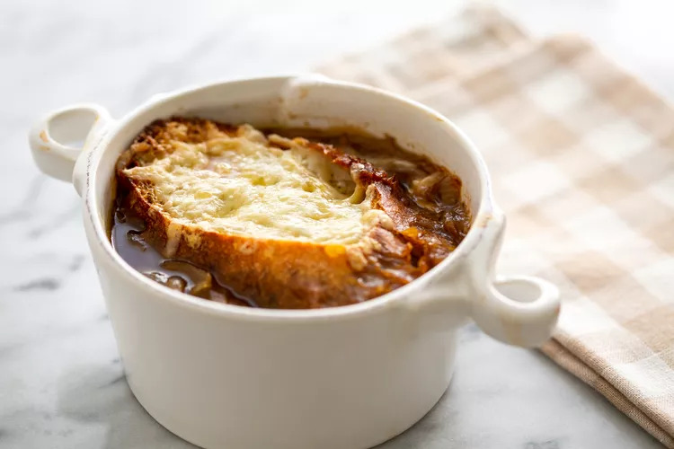

French Onion Soup
- 6 large red or yellow onions
- 4 tablespoons extra virgin olive oil
- 2 tablespoons butter
- 1 teaspoon sugar
- Kosher salt
- 2 cloves garlic, minced
- 8 cups beef stock, chicken stock, or a combination of the two
- 1/2 cup dry vermouth or dry white wine
- 2 bay leaves
- 1 tablespoon fresh thyme leaves, a few sprigs of fresh thyme, OR
1/2 teaspoon dried thyme
- 1/2 teaspoon freshly ground black pepper
- 2 tablespoons brandy (optional)
- 8 slices (1 inch thick) French bread or baguette
- 1 1/2 cups grated Gruyere cheese
- Sprinkling grated Parmesan cheese
